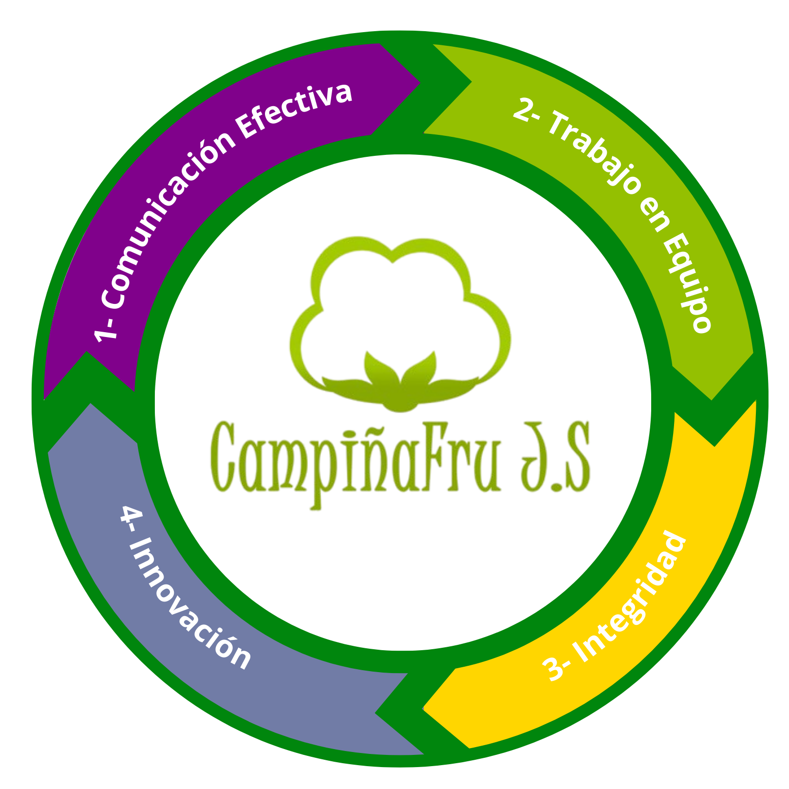
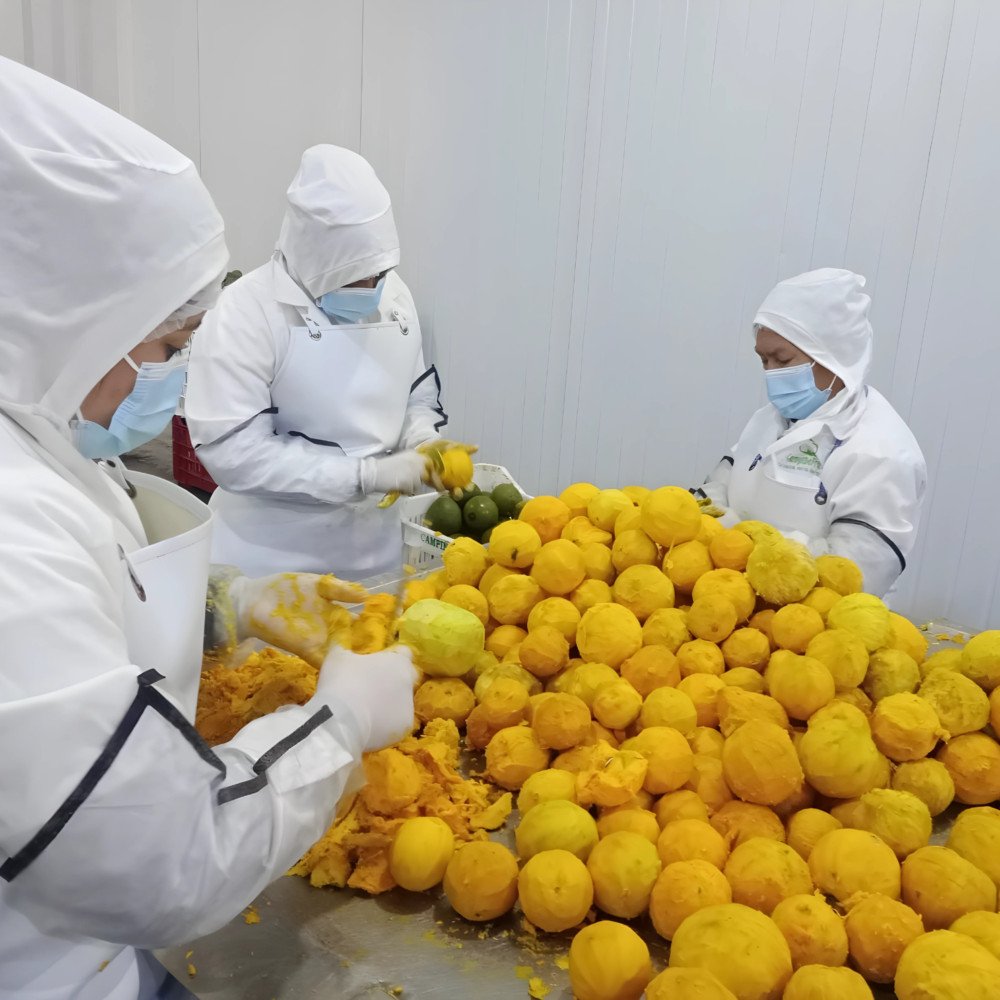

Quiénes somos
Nuestra historia data desde enero del 2013, iniciamos actividades en las misticas tierras de la pronvincia de Huaura, nos especializamos en la transformación y comercialización de pulpas de frutas, dirigida al sector alimentario y de consumo masivo. CampiñaFru se enfoca en brindar productos naturales y seguros, garantizando estándares de calidad en cada etapa del proceso productivo.
Nuestros Valores
¿Nuestra Misión?
Proporcionar pulpas de frutas de alta calidad, garantizando inocuidad y frescura en cada producto, a través de procesos eficientes y sostenibles. Comprometidos con el desarrollo del sector agroindustrial y la satisfacción de nuestros clientes.
¿Nuestra Visión?
Ser una empresa referente en el mercado nacional e internacional en la producción y comercialización de pulpas de frutas, destacándose por la calidad, innovación y cumplimiento de normativas que garanticen la satisfacción de los clientes.
Nuestro Compromiso
Brindar productos naturales y seguros, garantizando estándares de calidad en cada etapa del proceso productivo
